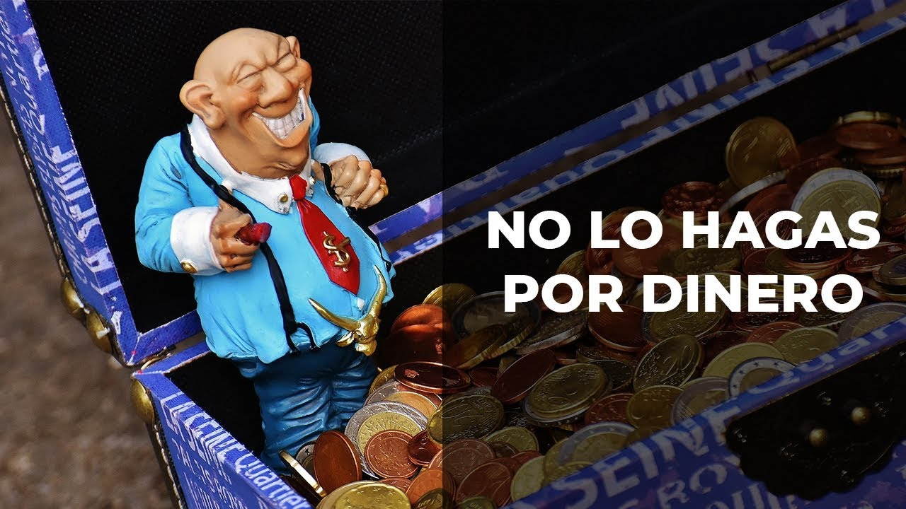

Deja de pensar en el Dinero

Probablemente en algún momento vas a escuchar esta frase «no hagas trading por dinero«, esto puede llegar a confundirte si no lo escuchas en el contexto adecuado.
¿Te soy sincero? yo era una de esas personas que pensaba «si no hago trading por dinero ¿entonces por que?«, pero no fue hasta algunos años después que me di cuenta que esa frase tiene un significado mucho más poderoso que el que yo le estaba dando.
Que no hagas trading por dinero no quiere decir que operes por diversión «jaja que bien perdí una operación, ¡eeh! esto es super divertido«. ¿No verdad? algo no encaja en esto.
Esto no es un juego.
Considero que todo es causa de nuestra mala disciplina. Si no fuéramos tan indisciplinados no nos tomaríamos el trading a la ligera, entenderíamos que para un trabajo que te ofrece la capacidad de ganar el mismo sueldo que un doctor o un ingeniero trabajando unas cuantas horas desde tu casa no se puede conseguir con 20 minutos de práctica y un libro de teoría.
¡Vamos Trader! Esto no es un juego, esto es una profesión y cómo cualquier otra profesión si quieres tener tu paga debes desempeñarte bien, hacer un análisis de calidad, de esos análisis en los cuales te sientes orgulloso por el buen trabajo que has hecho.
Enfoque en: Buen análisis, el resultado es: Ganar Dinero.
Enfoque en: Ganar Dinero, el resultado es: Mal análisis y un Mal análisis te lleva a: Perder dinero.
Tomate tu tiempo.
Comprende que esto no es una carrera, nadie te esta obligando a operar, nadie te esta apuntando con una pistola para que hagas una operación en 15 minutos.
Tomate tu tiempo para aprender y asegúrate que realmente estas entendiendo el tema, no leas una página de un libro o veas el vídeo de un curso solo para poder avanzar al siguiente, creyendo que con eso ya se te ha quedado toda la información.
Debes tomarte el tiempo para estudiar, para analizar y sacar tus conclusiones de lo aprendido.
Hay una persona que ha visto las 70 clases de la versión antigua del curso, y en varios de los vídeos técnicos ha dejado un comentario con una conclusión de lo aprendido. Un extracto de la esencia de cada clase. Es alguien que se toma su tiempo para analizar lo que ha estudiado y dejar plasmado lo que ha comprendido de la clase.
Conoce y acepta las reglas del juego.
Con esto no estoy diciendo que el trading sea un juego (ya vas con tus malas ideas 😮 )
Con esto me refiero a que debes aceptar y reconocer que en algún momento aunque ya te hayas vuelto un trader profesional habrán operaciones con resultados negativos. Esto es parte del trading, recuerda que solo podemos aproximamos un 80% de probabilidades de éxito en cada trade que hagamos.
Si aceptas las reglas no debes de enojarte por una operación perdida, de hecho debes de tener un plan que te diga cuanto es el límite de pérdidas y ganancias que tienes permitido hacer por día.
Esto obviamente aplica si estas en real (si o si debes tener una gestión en real si no quieres perder tu dinero), o si estas en la etapa de evaluación en tu cuenta demo.
El límite de pérdidas que tu te permites tener por día es tu freno de emergencia, cuando sientas que te empiezas a salir de camino, cuando sientas la ansiedad de sobreoperar para recuperar tu dinero perdido, en ese momento aplica el freno de emergencia.
¡Se fuerte! cierra la plataforma, apaga tu computadora, sal a hacer algo que te distraiga y luego cuando ya hayas asumido la pérdida entonces vuelve, estudia tus errores y aprende de ellos, mejora para el próximo día.
Debes ser fuerte Trader, se que es muy fácil de decir pero realmente es difícil pelear y pretender destruir un mal hábito en cuestión de minutos. Debes ser fuerte y perseverar en esta batalla, ser constante, entenderte, perdonarte y mejorar.
Si quieres ser rentable en el trading no debes enfocarte en el dinero, dime entonces ¿En que debes enfocarte?